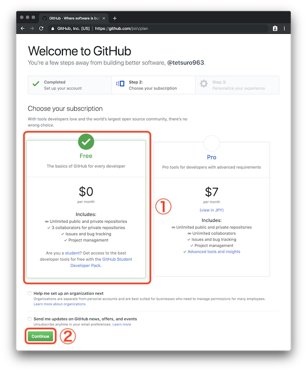
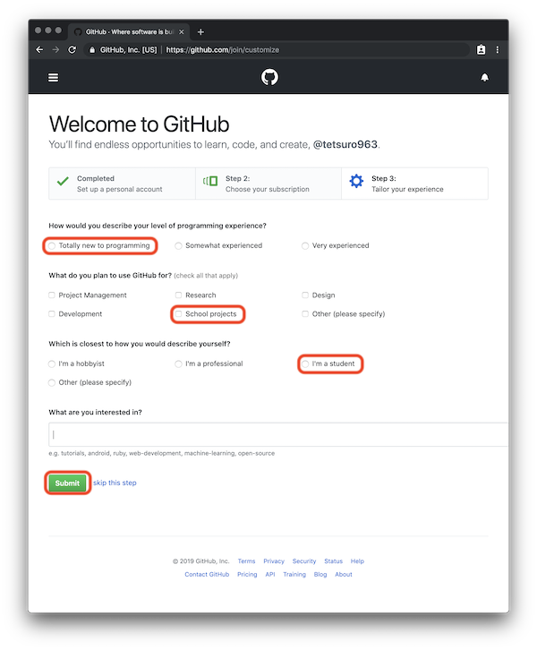
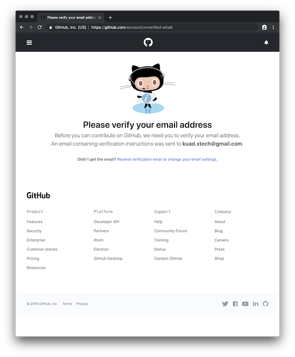
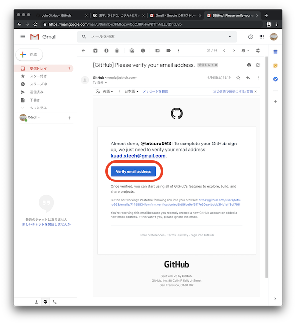
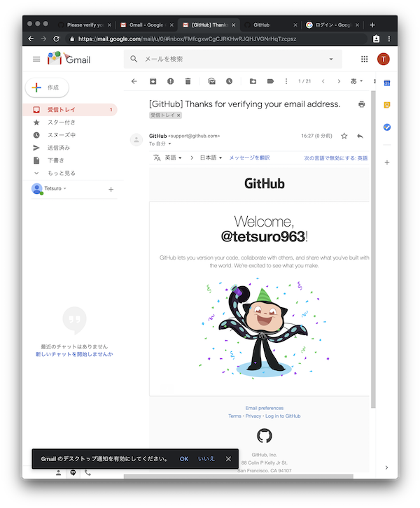
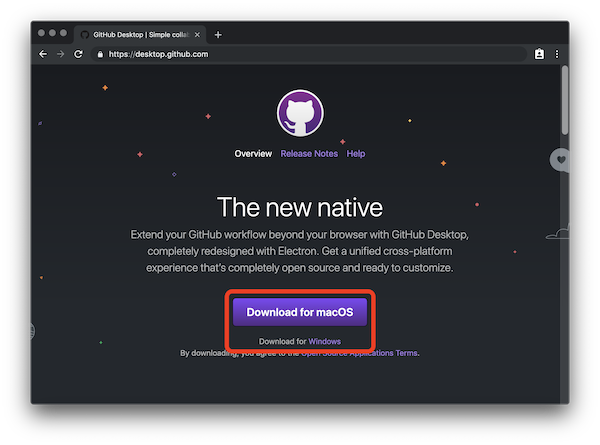

＊事前準備＊
Macの人たちへのお願い
Macはデフォルト設定で，DesktopとDocument（書類）のフォルダがiCloudに保存されるという悪魔的な設定がされています．
自分で設定をし直して，iCloudの監視を外しましょう．
- こちらのリンクを参考にする
- ページ内の"「デスクトップ」と「書類」を無効にする"を参照
GitHubのアカウント作成 / Sign up with GitHub
GitHubを利用するためにアカウントを作成する．
GitHubとは，Gitというバージョン管理システムを利用した，ソースコードの公開プラットフォーム．
参考ページ：サルでもわかるGit入門
- このリンクを踏みGitHubのSignUpページにいく
- 写真手順通り内容を埋めていく
- ①ユーザーネームを設定する
- ②大学メールアドレスを入力する
- ③パスワードを設定する（絶対に忘れないこと）
- ④Verify(確認)ボタンをクリックしてパズルを完成させる
- ⑤アカウントを作成するボタンをクリック
- サブスクリプションプランを"Free"で選択し，”continue”をクリック 
- 自分のプログラミング経験値を写真の通り入力し，"Submit"をクリック 
- emailアドレスの確認の画面に遷移する 
- mailAppを起動して，写真のようなメールから”Verify email address”をクリック（届くまで少し時間がかかる） 
- GitHubのアカウントページに入れる
- アカウントの作成が完了．メールが届く（少し時間がかかる） 
GitHubDesktopのインストール / Installing of GitHubDesktop
GitHubDesktopとは，Gitを利用したリポジトリ管理と送受信をするプラットフォーム
- 次のリンクから，対応したOSのファイルをダウンロード 
- zipファイルがダウンロードされる
- Windowsの場合は右クリックから展開＞インストール？
- Macはダブルクリックで展開＞アプリケーションフォルダに移動する
- GitHubDesktopを起動する